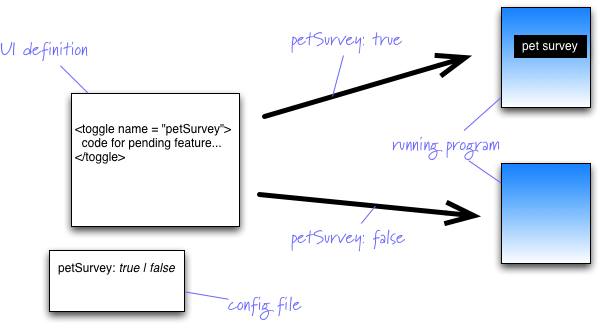

Continuous Delivery
withFeature Toggle
Tong Zhang & Shiwei Zhou
What is Feature Toggle?

What is Feature Toggle?
A feature toggle, is a technique in software development that attempts to provide an alternative to maintaining multiple source-code branches (known as feature branches).
How to deal with pending features that take longer than a single release cycle?
Feature Branch - Branching in SCM
- Better Isolation
- Deferred merge and integration => Merge Hell
- Chilling effect on refactoring
Feature Toggle - Branching in Code
- Continuous Integration
- Risk of negative effects from pending features
- More complexity and less readability in code
Prerequisites
- CI
- Automated Testing (unit, integration, functional, load, stress, endurance, security, etc...)
Some Patterns with Feature Toggle
- UI (HTML, CSS, JS)
- Web API
- Data Store
Lifecycle of Feature Toggles
- Plan with Feature Toggle
- Develop with Feature Toggle
- Test with Feature Toggle
- Release with Feature Toggle
- Retire Feature Toggle
Plan with Feature Toggle
- Can it be avoided?
- Exit Strategy
- Scope, time and order of delivery
Develop with Feature Toggle
- Refactor
- Releasable commits
Test with Feature Toggle
- Keep testing for "toggle off" until it is retired.
- Start testing for "toggle on" after development is done.
Release with Feature Toggle
Retire Feature Toggle
- Careful and thorough clean up
- Keep testing
Tips And Tricks
- Minimize conditional logic to the UI and to entry points in the system.
- Keep it alive as short as possible.
- Make them independent.
- Control the total number.
- Control the scope.
- Design
- Choose name wisely.
"Feature Toggles are the last thing you should do."
"Feature Toggles are one of the worst kinds of Technical Debt."